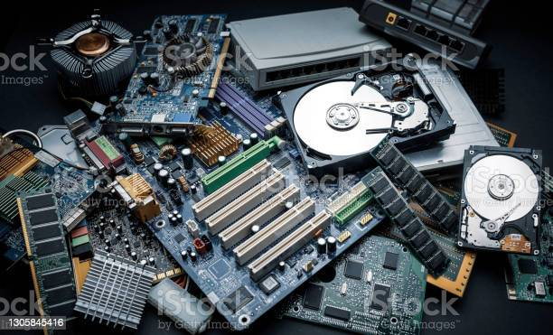

Computer Hardware
Computer hardware is a collective term used to describe
any physical components of an analog or digital
computer.
The term hardware distinguishes the tangible aspects
of a computing device from software, which consist
of written, machine-readable instructions or programs
that tell physical components what to do and when
to excute the instructions.
Computer hardware can be categorize as being either
internal or external components. generally, internal hardware componentsare those necessary for the proper functioning
of the computer, while external hardware components are attached to the computer to add or enhance functionality.

Go To